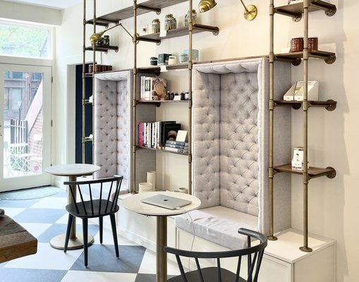

Jonquils Cafe- If youre looking for the coolest pastries in town, this
is it!! They make 3d printed desserts that are light and refreshing and
have amazing flavors. The atmosphere is unique and aesthetic and their
coffee is really overpriced but once in a while it is totally worth it!
Each pastry is carefully constructed and makes days to make go try them
out!
Cafe Susu- Coffee shop speakeasy! It is difficult to find because you
have to go into a suit store and walk down the stairs underground! They
serve alcoholic beverages and fantastic coffee. They do not have a lot
of food options because they are best know for their fun drinks flavors.
Be warned! It is tiny inside! So plan accourdingly if it is too crowded
of go at a slower time. Definitely worth it to check out while you walk
down the famous Newbury Street.
Blue Bottle- Located convenient on Newbury Street and is a Boston and
New Nork classic! They have outdoor seating but not much inside. They
have amazing lattes which are rich and creamy if you like that style! If
you go you must get their waffles, you will not regret it!

Greystone- Personally I have not been to this coffee shop yet, however,
I have heard so much about it and have been dying to check it out!! They
have the cutest and most aesthetic vibe and giant tufted grey seats to
take pictures in. Sorry I do not have more informtion on this cafe, but
I will update it when I go!
 Downtown
Back Bay
Cambridge
Charlestown
North End
About Me!
Downtown
Back Bay
Cambridge
Charlestown
North End
About Me!